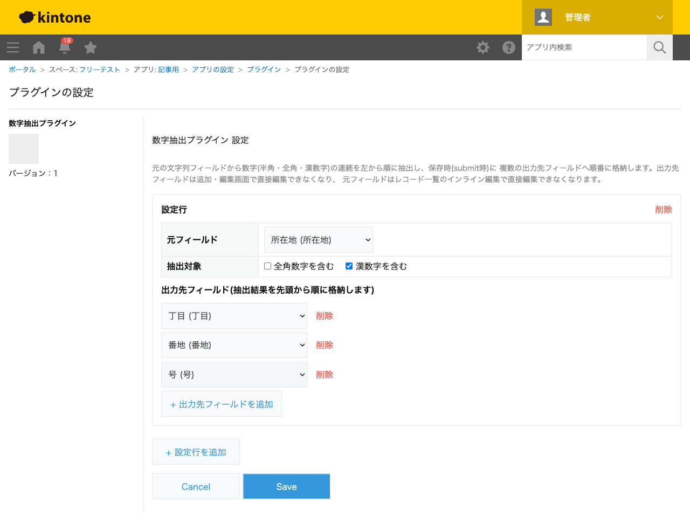
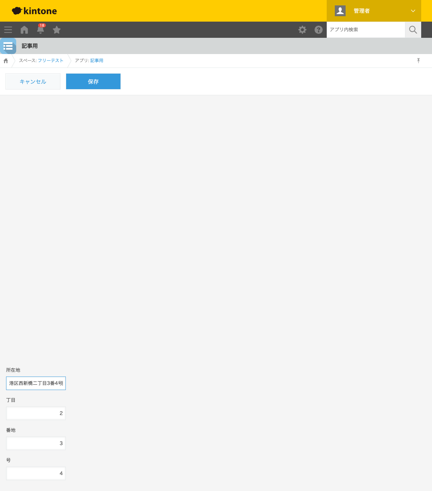

GovAppsプラグイン 安全性を確認できる無料kintoneプラグイン集
「港区西新橋二丁目3番4号」のような住所文字列から、丁目・番地・号の数字部分だけを取り出して 別フィールドに入れたい場面があります。区切り文字が挟まっていない(「丁目」「番」「号」という 漢字の直前直後に数字が来る)ケースは、単純な文字列分割では対応できません。この記事では、 無料プラグインで文字列中の数字の連続部分(半角・全角・漢数字)を自動抽出する方法を、実際の 設定画面と抽出結果つきで解説します。
kintoneの標準機能や計算(CALC)フィールドには、文字列の中から数字の連続部分だけを抽出する 機能はありません。まして漢数字を算用数字に変換する機能は標準にはなく、住所から丁目・番地を 取り出したい場合は手入力で二重管理するのが現実的な運用になりがちです。JavaScriptカスタマイズを 自作すれば正規表現で数字の連続を抜き出せますが、全角数字の読み替えや漢数字(位取り表記・ 読み上げ表記の両方)の変換まで実装するのは簡単な作業ではありません。
「文字列から数字の連続部分を抽出する」機能を用意する方法は、大きく4つあります。それぞれの 向き不向きをまとめました。
| 方法 | 向いている場合 | 注意点 |
|---|---|---|
| kintone標準機能のみ | 数字部分を別フィールドに分ける必要が無い場合 | 抽出機能自体が無い |
| JavaScriptを自作する | 社内に開発者がいて、独自の変換ルールが必要な場合 | 全角・漢数字変換の実装・保守が必要 |
| 有料の他社プラグイン | 予算があり、手厚いサポートを求める場合 | 月額課金が発生する。ソースコードが非公開で、変換ロジックを利用者側で確認しにくいことが多い |
| GovAppsプラグイン(このプラグイン) | 無料で試したい、社内・庁内でセキュリティを確認してから導入したい場合 | 漢数字は「億」以上の位には対応しない |
GovAppsのプラグインはすべて無料・広告なしで、追加課金なしで使い続けられます。 ソースコードはGitHubで全公開しているオープンソースなので、 「本当に外部と通信していないか」を自治体・企業のセキュリティ担当者自身の目で確認できます (このプラグインも個別ページにセキュリティレビュー結果を掲載しています)。
数字抽出プラグインは、元フィールド・抽出対象(全角数字/ 漢数字を含むか)・出力先フィールドの並びを設定するだけです。今回は「所在地」(元フィールド)・ 「丁目」「番地」「号」(出力先フィールド、いずれも数値型)を持つアプリで設定しました。

レコード追加画面で「所在地」に「港区西新橋二丁目3番4号」と入力すると、入力した瞬間に 「丁目」フィールドへ「2」(「二」を算用数字に変換)、「番地」フィールドへ「3」、「号」フィールドへ 「4」が自動的に入力されます。保存を待たずに、値を変更するたびにその場で再計算されます。

出力先フィールドは編集可能なままなので、自動抽出された値が意図と違う場合は手で修正できます。 一度修正した値は、次に所在地を変更するまでそのまま残ります(保存時に上書きされることもありません)。